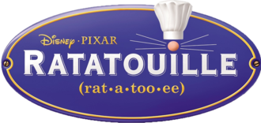

<!-- Composant de carte matérielle (mat-card) -->
<mat-card>

  <!-- Titre de la carte -->
  <mat-card-title>
    {{title}} <!-- Affichage dynamique du titre -->
  </mat-card-title>

  <!-- Contenu de logo (contenant l'image) -->
   <!-- Image de l'assiette -->
 

  <!-- Contenu de la carte -->
  <mat-card-content>

    <!-- Formulaire avec ngSubmit lié à la méthode onSubmit() -->
    <form [formGroup]="formGroup" (ngSubmit)="onSubmit()">

      <!-- Emplacement pour les contenus enfants (ng-content) -->
      <ng-content></ng-content>  
    </form>
    
  </mat-card-content>

  <!-- Actions de la mat card -->
  <mat-card-actions class="d-flex justify-content-evenly pb-3">
    <!-- Bouton "Retour" conditionnel basé sur la variable showBackButton -->
    @if (showBackButton) {
    <button mat-raised-button color="warn" type="button" (click)="goToLogin()">Retour</button>
    }

    <!-- Bouton "S'enregistrer" conditionnel basé sur le titre -->
    @if (title === 'Connexion'){
    <button mat-raised-button color="accent" type="button" (click)="goToRegister()">S'enregistrer</button>
    }

    <!-- Bouton pour soumettre le formulaire -->
    <button mat-raised-button color="primary" type="button" (click)="onSubmit()">{{buttonName}}</button>

  </mat-card-actions>

</mat-card>


